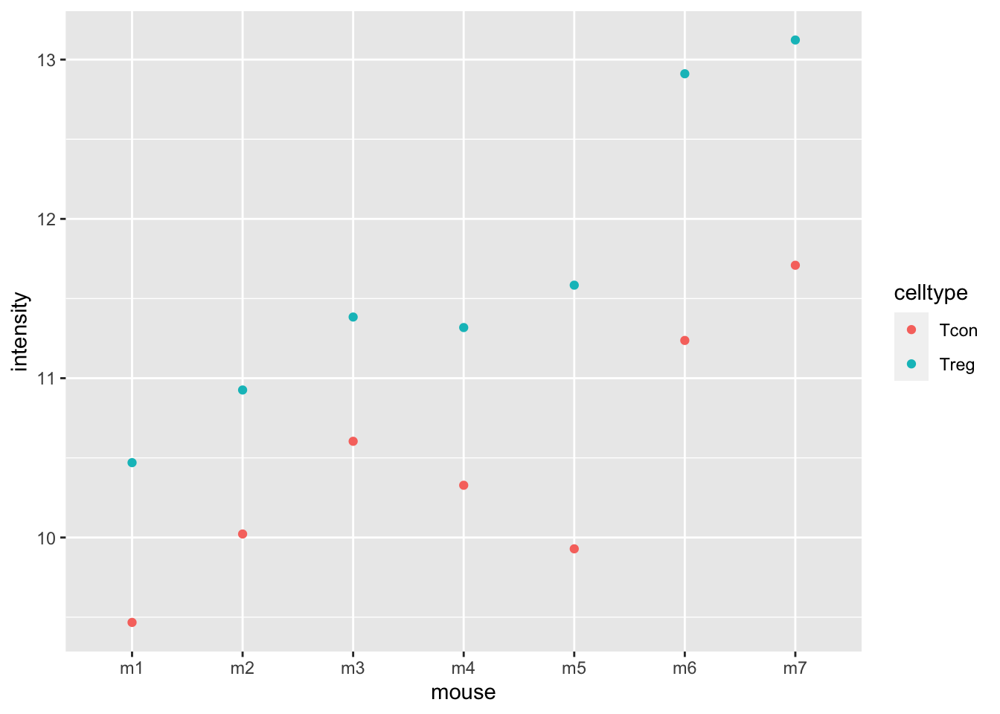
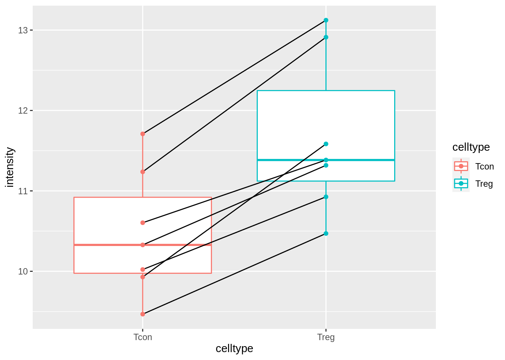
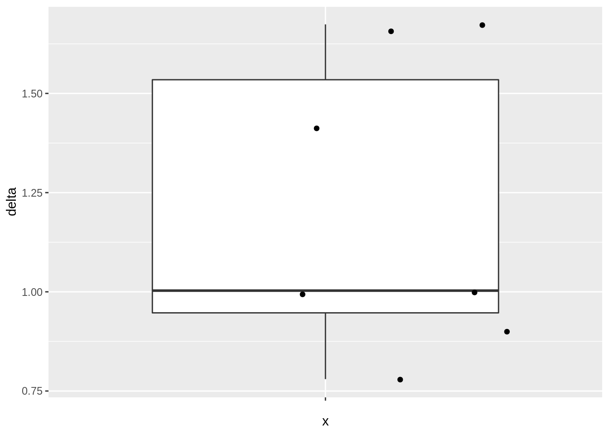
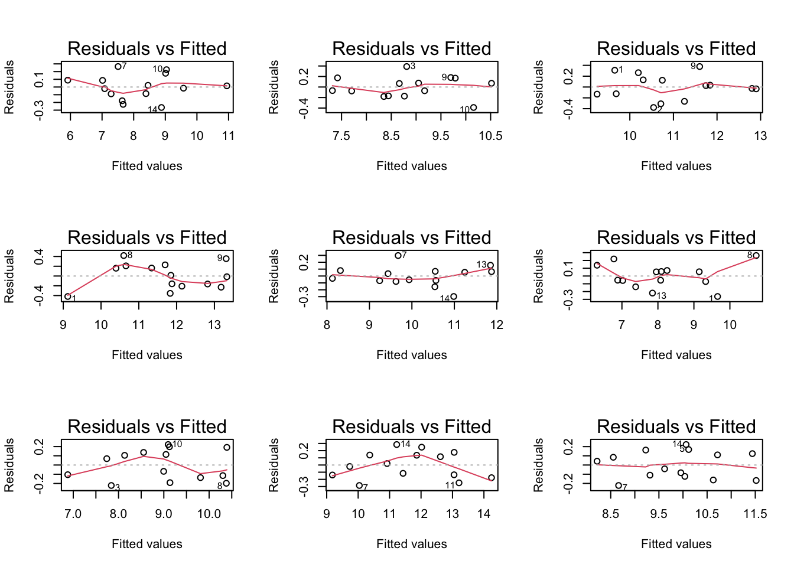
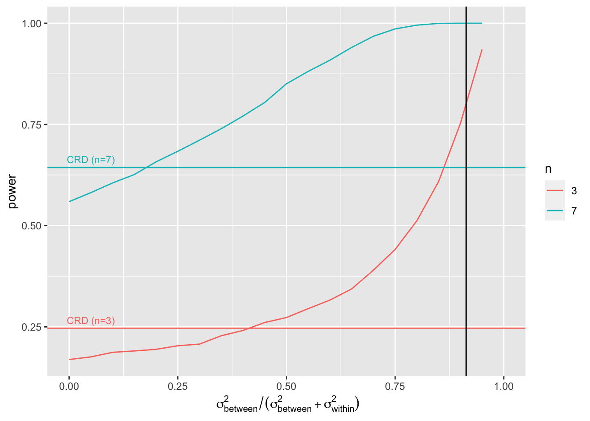
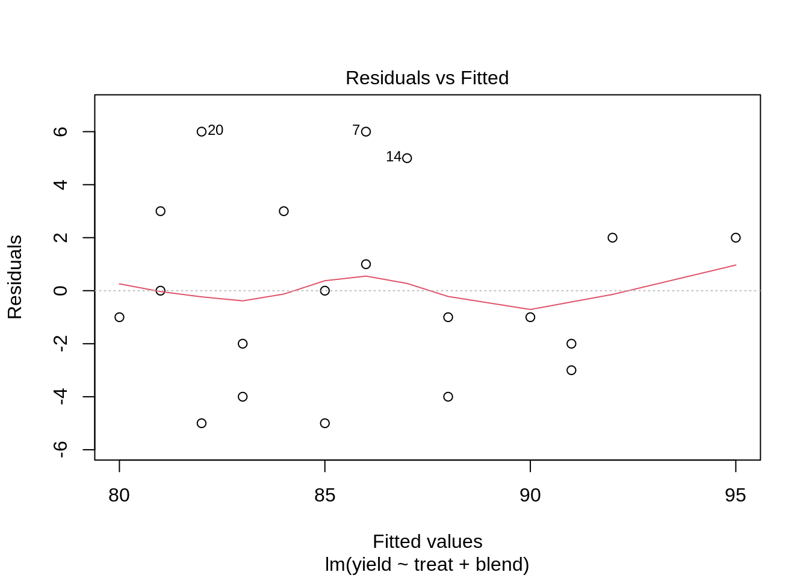
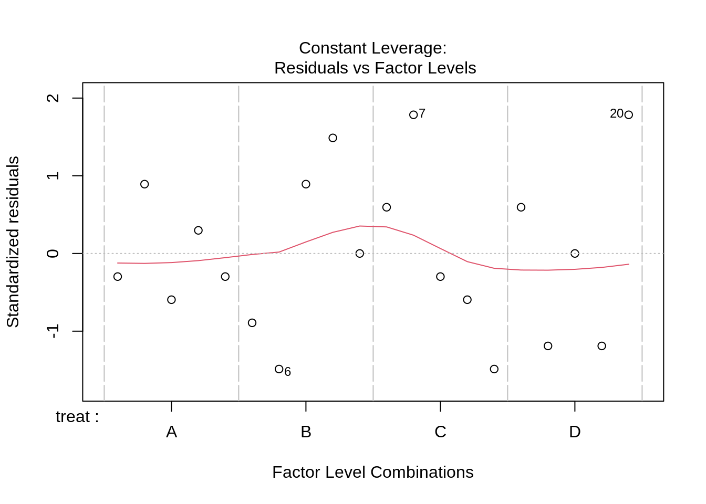
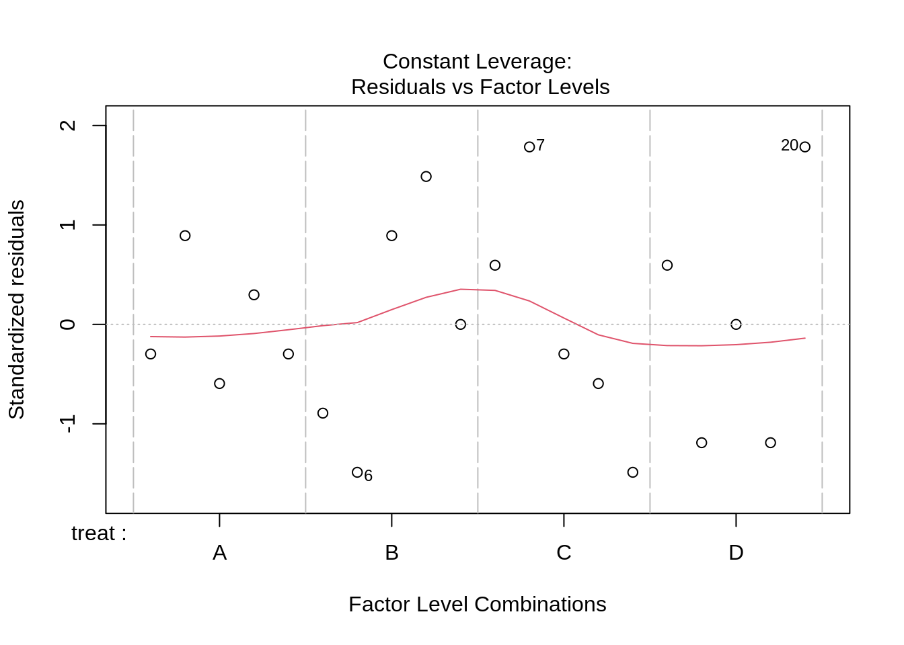
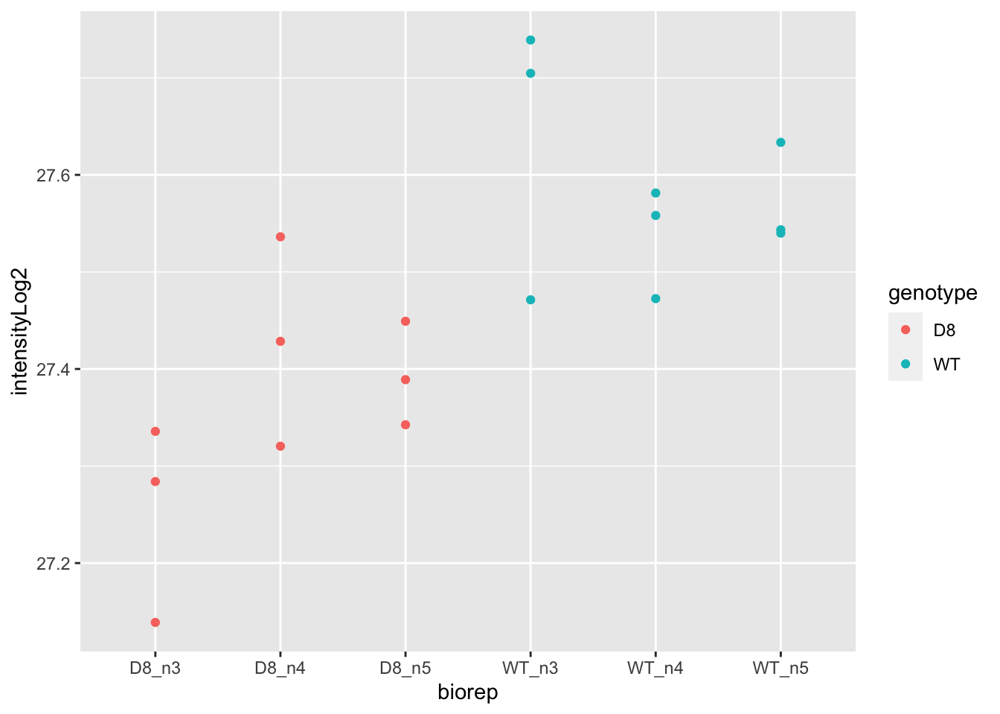
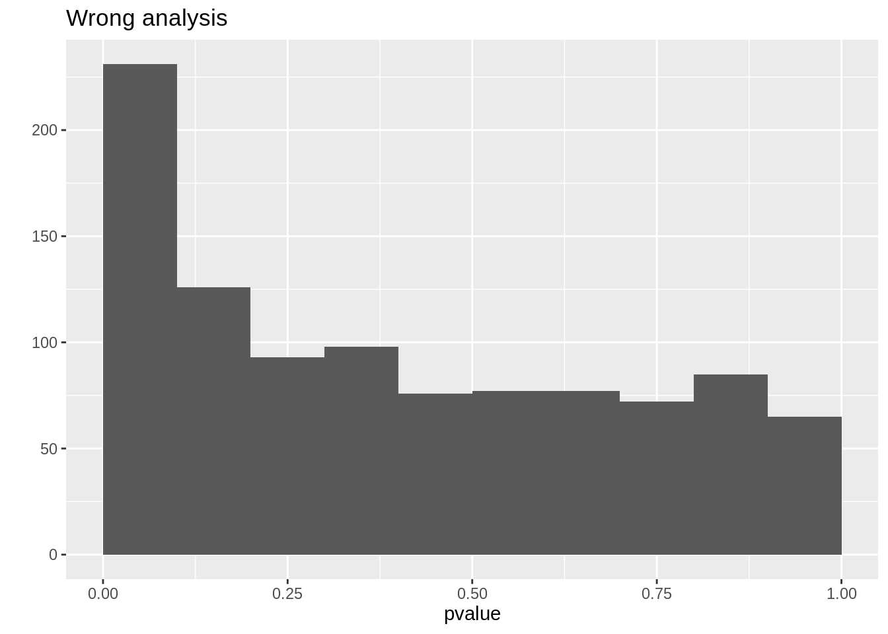

8.4 Experimental Design III: Randomized Complete Block Designs and Pseudo-replication
Lieven Clement
statOmics, Ghent University (https://statomics.github.io)

library(tidyverse)## ── Attaching packages ─────────────────────────────────────── tidyverse 1.3.1 ──## ✔ ggplot2 3.3.5 ✔ purrr 0.3.4
## ✔ tibble 3.1.6 ✔ dplyr 1.0.8
## ✔ tidyr 1.2.0 ✔ stringr 1.4.0
## ✔ readr 2.1.2 ✔ forcats 0.5.1## ── Conflicts ────────────────────────────────────────── tidyverse_conflicts() ──
## ✖ dplyr::filter() masks stats::filter()
## ✖ dplyr::lag() masks stats::lag()1 Randomized complete block designs
\[\sigma^2= \sigma^2_{bio}+\sigma^2_\text{lab} +\sigma^2_\text{extraction} + \sigma^2_\text{run} + \ldots\]
- Biological: fluctuations in protein level between mice, fluctations in protein level between cells, …
- Technical: cage effect, lab effect, week effect, plasma extraction, MS-run, …
2 Nature methods: Points of significance - Blocking
https://www.nature.com/articles/nmeth.3005.pdf
Oneway anova is a special case of a completely randomized design:
- the experimental units are sampled at random from the population
- the treatments are randomized to the experimental units
- Every experimental unit receives one treatment and its response variable is measured once.
In a block design the experimental units are blocks which are sampled at random of the population of all possible blocks.
- The RCB restricts randomization: the treatments are randomized within the blocks.
- it cannot be analysed using oneway anova.
- The paired design is a special case of an RCB: block size equals 2.
- Within block effects can be assessed using the lm function in R.
3 Mouse example
3.1 Background

Duguet et al. (2017) MCP 16(8):1416-1432. doi: 10.1074/mcp.m116.062745
- All treatments of interest are present within block!
- We can estimate the effect of the treatment within block!
We focus on one protein
- The measured intensities are already on the log2-scale. Differences between the intensities can thus be interpreted as log2 FC.
- P16045 or Galectin-1.
- Function: “Lectin that binds beta-galactoside and a wide array of complex carbohydrates. Plays a role in regulating apoptosis, cell proliferation and cell differentiation. Inhibits CD45 protein phosphatase activity and therefore the dephosphorylation of Lyn kinase. Strong inducer of T-cell apoptosis.” (source: uniprot)
3.2 Data Exploration
mouse <- read_tsv("https://raw.githubusercontent.com/statOmics/PSLS21/data/mouseP16045.txt")## Rows: 14 Columns: 3
## ── Column specification ────────────────────────────────────────────────────────
## Delimiter: "\t"
## chr (2): celltype, mouse
## dbl (1): intensity
##
## ℹ Use `spec()` to retrieve the full column specification for this data.
## ℹ Specify the column types or set `show_col_types = FALSE` to quiet this message.mousemouse %>%
ggplot(aes(x = mouse, y = intensity, col = celltype)) +
geom_point()
mouse %>%
ggplot(aes(x = celltype, y = intensity)) +
geom_boxplot(aes(col = celltype), outlier.shape = NA) +
geom_line(aes(group = mouse)) +
geom_point(aes(col = celltype))
The plots show evidence for - an upregulation of the protein expression in regulatory T-cells and - a considerable variability in expression from animal to animal!
3.3 Paired Analysis
This is a paired design, which is the most simple form of randomized complete block design.
In the introduction to statistical inference we would have analyzed the data by differencing.
mouseWide <- mouse %>%
spread(celltype, intensity) %>%
mutate(delta = Treg - Tcon)
mouseWide3.3.1 Data exploration
- Boxplot of difference
mouseWide %>%
ggplot(aes(x = "", y = delta)) +
geom_boxplot(outlier.shape = NA) +
geom_jitter()
- Summary statistics
deltaSum <- mouseWide %>%
summarize_at(
"delta",
list(
mean = ~ mean(., na.rm = TRUE),
sd = ~ sd(., na.rm = TRUE),
n = ~ is.na(.) %>%
`!`() %>%
sum()
)
) %>%
mutate(se = sd / sqrt(n))
deltaSumNote, that the intensity data are not independent because we measured the expression in regulatory and ordinary T-cells for every animal
- Covariance and correlation between expression in both celltypes
cor(mouseWide[, c("Tcon", "Treg")])## Tcon Treg
## Tcon 1.00000 0.93874
## Treg 0.93874 1.00000var(mouseWide[, c("Tcon", "Treg")])## Tcon Treg
## Tcon 0.6101531 0.7245316
## Treg 0.7245316 0.9763042var(mouseWide[, c("Tcon", "Treg")]) %>%
diag() %>%
sqrt()## Tcon Treg
## 0.7811230 0.9880811There is indeed a large correlation between the expression of the protein in conventional and regulatory T-cells.
Standard deviation of difference?
\[ \begin{array}{lcl} \text{sd}_{x_r - x_c} &=& \sqrt{1^2\hat \sigma_r^2 + (-1)^2 \hat \sigma_c^2 + 2 \times 1 \times -1 \times \hat\sigma_{r,c}}\\ &=&\sqrt{\hat \sigma_r^2 + \hat \sigma_c^2 - 2 \times \hat\sigma_{r,c}} \end{array} \]
sdDelta2 <- (c(-1, 1) %*% var(mouseWide[, c("Tcon", "Treg")]) %*% c(-1, 1)) %>%
sqrt()
sdDelta2## [,1]
## [1,] 0.3706672seDeltaBar <- sdDelta2 / sqrt(deltaSum$n)
seDeltaBar## [,1]
## [1,] 0.140099deltaSum- The standard deviation on the difference is much lower because of the strong correlation!
- Note, that the paired design enabled us to estimate the difference in log2-expression between the two cell types in every animal (log2 FC).
3.4 Randomized complete block analysis
We can also analyse the design using a linear model, i.e. with
- a main effect for cell type and
- a main effect for the block factor mouse
Because we have measured the two cell types in every mouse, we can thus estimate the average log2-intensity of the protein in the T-cells for each mouse.
lmRCB <- lm(intensity ~ celltype + mouse, mouse)
plot(lmRCB, which = c(1, 2, 3))


If you have doubts on that your data violates the assumptions you can always simulate data from a model with similar effects as yours but where are distributional assumptions hold and compare the residual plots.
design <- model.matrix(intensity ~ celltype + mouse, mouse)
sigmaMouse <- sqrt(car::Anova(lmRCB, type = "III")["mouse", "Sum Sq"] / car::Anova(lmRCB, type = "III")["mouse", "Df"])
betas <- lmRCB$coefficients
nMouse <- mouse$mouse %>%
unique() %>%
length()
par(mfrow = c(3, 3))
for (i in 1:9)
{
mouseEffect <- rnorm(nMouse, sd = sigmaMouse)
betasMouse <- mouseEffect[-1] - mouseEffect[1]
betas[-c(1:2)] <- betasMouse
ysim <- design %*% betas + rnorm(nrow(design), sd = sigma(lmRCB))
plot(lm(ysim ~ -1 + design), which = 1)
}
The deviations seen in our plot are in line with what those observed in simulations under the model assumptions. Hence, we can use the model for statistical inference.
anovaRCB <- car::Anova(lmRCB, type = "III")
summary(lmRCB)##
## Call:
## lm(formula = intensity ~ celltype + mouse, data = mouse)
##
## Residuals:
## Min 1Q Median 3Q Max
## -0.2356 -0.1387 0.0000 0.1387 0.2356
##
## Coefficients:
## Estimate Std. Error t value Pr(>|t|)
## (Intercept) 9.3671 0.1981 47.277 6.00e-09 ***
## celltypeTreg 1.2029 0.1401 8.586 0.000137 ***
## mousem2 0.5055 0.2621 1.929 0.102036
## mousem3 1.0255 0.2621 3.913 0.007869 **
## mousem4 0.8545 0.2621 3.260 0.017245 *
## mousem5 0.7880 0.2621 3.006 0.023809 *
## mousem6 2.1055 0.2621 8.033 0.000199 ***
## mousem7 2.4475 0.2621 9.338 8.55e-05 ***
## ---
## Signif. codes: 0 '***' 0.001 '**' 0.01 '*' 0.05 '.' 0.1 ' ' 1
##
## Residual standard error: 0.2621 on 6 degrees of freedom
## Multiple R-squared: 0.9717, Adjusted R-squared: 0.9388
## F-statistic: 29.47 on 7 and 6 DF, p-value: 0.000309t.test(mouseWide$delta)##
## One Sample t-test
##
## data: mouseWide$delta
## t = 8.5858, df = 6, p-value = 0.0001372
## alternative hypothesis: true mean is not equal to 0
## 95 percent confidence interval:
## 0.8600472 1.5456671
## sample estimates:
## mean of x
## 1.202857anovaRCBNotice that
the estimate, se, t-test statistic and p-value for the celltype effect of interest is the same as in the paired t-test!
the anova analysis shows that we model the total variability in the protein expression in T-cells using variability due to the cell type (CT), the variability from mouse to mouse (M) and residual variability (R) within mouse that we cannot explain. Indeed,
\[ \begin{array}{lcl} \text{SSTot} &=& \text{SSCT} + \text{SSM} + \text{SSR}\\ 14.6 &=& 5.1 + 9.1 + 0.4 \end{array} \]
So the celltype and the mouse effect explain respectively \[ \begin{array}{ll} \frac{\text{SSCT}}{\text{SSTot}}\times 100&\frac{\text{SSM}}{\text{SSTot}}\times 100\\\\ 34.7& 62.4\\ \end{array} \]
percent of the variability in the protein expression values and \[ \frac{\text{RSS}}{\text{SSTot}} \times 100 = 2.8 \] percent cannot be explained.
Note, that
- the variability from mouse to mouse is the largest source of variability in the model,
- This variability can be estimated with the RCB design and
- can thus be isolated from the residual variability
- leading to a much higher precision on the estimate of the average log2 FC between regulatory and conventional T-cells that what would be obtained with a CRD!
Note, that the RCB also has to sacrifice a number of degrees of freedom to estimate the mouse effect, here 6 DF.
Hence, the power gain of the RCB is a trade-off between the variability that can be explained by the block effect and the loss in DF.
If you remember the equation of variance covariance matrix of the parameter estimators \[ \hat{\boldsymbol{\Sigma}}^2_{\hat{\boldsymbol{\beta}}} =\left(\mathbf{X}^T\mathbf{X}\right)^{-1}\hat\sigma^2 \]
you can see that the randomized complete block will have an impact on
- \(\left(\mathbf{X}^T\mathbf{X}\right)^{-1}\) as well as
- on \(\sigma^2\) of the residuals!
\(\rightarrow\) We were able to isolate the variance in expression between animals/blocks from our analysis!
\(\rightarrow\) This reduces the variance of the residuals and leads to a power gain if the variability between mice/blocks is large.
Also note that,
\[ \hat\sigma^2 = \frac{\text{SSR}}{n-p} = \frac{SSTot - SSM - SSCT}{n-p} \]
- Hence, blocking is beneficial if the reduction in sum of squares of the residuals is large compared to the degrees of freedom that are sacrificed.
- Thus if SSM can explain a large part of the total variability.
Further, the degrees of freedom affect the t-distribution that is used for inference, which has broader tails if the residual degrees of freedom \(n-p\) are getting smaller.
4 Power gain of an RCB vs CRD
In this section we will subset the original data in two experiments:
- A randomized complete block design with three mice
- A completely randomized design with six mice but where we only measure one cell type in each mouse.
set.seed(859)
mRcb <- mouse %>%
pull(mouse) %>%
unique() %>%
sample(size = 3)
rcbSmall <- mouse %>% filter(mouse %in% mRcb)
rcbSmallmCrd <- mouse %>%
pull(mouse) %>%
unique() %>%
sample(size = 6)
crdSmall <-
bind_rows(
mouse %>%
filter(mouse %in% mCrd[1:3]) %>%
filter(celltype == "Tcon"),
mouse %>%
filter(mouse %in% mCrd[-(1:3)]) %>%
filter(celltype == "Treg")
)
crdSmallSo in both experiments we need to do six mass spectrometry runs.
lmCRDSmall <- lm(intensity ~ celltype, crdSmall)
summary(lmCRDSmall)##
## Call:
## lm(formula = intensity ~ celltype, data = crdSmall)
##
## Residuals:
## 1 2 3 4 5 6
## -0.507 -0.201 0.708 -1.189 -0.275 1.464
##
## Coefficients:
## Estimate Std. Error t value Pr(>|t|)
## (Intercept) 10.5290 0.6077 17.326 6.51e-05 ***
## celltypeTreg 1.1300 0.8594 1.315 0.259
## ---
## Signif. codes: 0 '***' 0.001 '**' 0.01 '*' 0.05 '.' 0.1 ' ' 1
##
## Residual standard error: 1.053 on 4 degrees of freedom
## Multiple R-squared: 0.3018, Adjusted R-squared: 0.1272
## F-statistic: 1.729 on 1 and 4 DF, p-value: 0.2589anova(lmCRDSmall)lmRCBSmall <- lm(intensity ~ celltype + mouse, rcbSmall)
anova(lmRCBSmall)summary(lmRCBSmall)##
## Call:
## lm(formula = intensity ~ celltype + mouse, data = rcbSmall)
##
## Residuals:
## 1 2 3 4 5 6
## 0.06433 0.12633 -0.19067 -0.06433 -0.12633 0.19067
##
## Coefficients:
## Estimate Std. Error t value Pr(>|t|)
## (Intercept) 9.9577 0.1940 51.329 0.000379 ***
## celltypeTreg 1.0327 0.1940 5.323 0.033527 *
## mousem3 0.5200 0.2376 2.189 0.160094
## mousem7 1.9420 0.2376 8.173 0.014641 *
## ---
## Signif. codes: 0 '***' 0.001 '**' 0.01 '*' 0.05 '.' 0.1 ' ' 1
##
## Residual standard error: 0.2376 on 2 degrees of freedom
## Multiple R-squared: 0.9804, Adjusted R-squared: 0.951
## F-statistic: 33.32 on 3 and 2 DF, p-value: 0.02928Note, that
- we are able to pick up the upregulation between regulatory T-cells and ordinary T-cells with the RCB but not with the CRD.
- the standard error of the \(\log_2\text{FC}_\text{Treg-Tcon}\) estimate is a factor 4.4 smaller for the RCB design!
A poor data analysis who forgets about the blocking will be back at square one:
wrongRbc <- lm(intensity ~ celltype, rcbSmall)
anova(wrongRbc)summary(wrongRbc)##
## Call:
## lm(formula = intensity ~ celltype, data = rcbSmall)
##
## Residuals:
## 1 2 3 4 5 6
## -0.7563 -0.1743 0.9307 -0.8850 -0.4270 1.3120
##
## Coefficients:
## Estimate Std. Error t value Pr(>|t|)
## (Intercept) 10.7783 0.5885 18.316 5.23e-05 ***
## celltypeTreg 1.0327 0.8322 1.241 0.282
## ---
## Signif. codes: 0 '***' 0.001 '**' 0.01 '*' 0.05 '.' 0.1 ' ' 1
##
## Residual standard error: 1.019 on 4 degrees of freedom
## Multiple R-squared: 0.2779, Adjusted R-squared: 0.09743
## F-statistic: 1.54 on 1 and 4 DF, p-value: 0.2825So, the block to block variability is then absorbed in the variance estimator of the residual.
Of course, we are never allowed to analyse an RCB with a model for a CRD (without block factor) because blocking imposes a randomization restriction: we randomize the treatment within block.
4.1 Powergain of blocking?
4.1.1 Power for completely randomized design
varBetweenPlusWithin <- sum(car::Anova(lmRCB, type = "III")[c("mouse", "Residuals"), "Sum Sq"]) / sum(car::Anova(lmRCB, type = "III")[c("mouse", "Residuals"), "Df"])
alpha <- 0.05
nSim <- 20000
b0 <- 0
sd <- sqrt(varBetweenPlusWithin)
ns <- c(3, 7)
deltas <- lmRCB$coefficients["celltypeTreg"]
L <- limma::makeContrasts("celltypeTreg", levels = c("(Intercept)", "celltypeTreg"))## Warning in limma::makeContrasts("celltypeTreg", levels = c("(Intercept)", :
## Renaming (Intercept) to InterceptpowerFast <- matrix(NA, nrow = length(ns) * length(deltas), ncol = 3) %>% as.data.frame()
names(powerFast) <- c("b1", "n", "power")
i <- 0
for (n in ns)
{
n1 <- n2 <- n
### Simulation
predictorData <- data.frame(celltype = rep(c("Tcon", "Treg"), c(n1, n2)) %>% as.factor())
design <- model.matrix(~celltype, predictorData)
for (b1 in deltas)
{
ySim <- rnorm(nrow(predictorData) * nSim, sd = sd)
dim(ySim) <- c(nrow(predictorData), nSim)
ySim <- ySim + c(design %*% c(b0, b1))
ySim <- t(ySim)
### Fitting
fitAll <- limma::lmFit(ySim, design)
### Inference
varUnscaled <- c(t(L) %*% fitAll$cov.coefficients %*% L)
contrasts <- fitAll$coefficients %*% L
seContrasts <- varUnscaled^.5 * fitAll$sigma
tstats <- contrasts / seContrasts
pvals <- pt(abs(tstats), fitAll$df.residual, lower.tail = FALSE) * 2
i <- i + 1
powerFast[i, ] <- c(b1, n, mean(pvals < alpha))
}
}
powerFastBecause we have a simple 2 group comparison we can also calculate the power using the power.t.test function.
power.t.test(n = 3, delta = lmRCB$coefficients["celltypeTreg"], sd = sqrt(varBetweenPlusWithin))##
## Two-sample t test power calculation
##
## n = 3
## delta = 1.202857
## sd = 0.8906339
## sig.level = 0.05
## power = 0.2477638
## alternative = two.sided
##
## NOTE: n is number in *each* grouppower.t.test(n = 7, delta = lmRCB$coefficients["celltypeTreg"], sd = sqrt(varBetweenPlusWithin))##
## Two-sample t test power calculation
##
## n = 7
## delta = 1.202857
## sd = 0.8906339
## sig.level = 0.05
## power = 0.6411438
## alternative = two.sided
##
## NOTE: n is number in *each* group4.2 Power for randomized complete block design
alpha <- 0.05
nSim <- 20000
b0 <- 0
sd <- sigma(lmRCB)
sdMouse <- sqrt(car::Anova(lmRCB)["mouse", "Sum Sq"] / car::Anova(lmRCB)["mouse", "Df"])
ns <- c(3, 7)
deltas <- lmRCB$coefficients["celltypeTreg"]
powerFastBlocking <- matrix(NA, nrow = length(ns) * length(deltas), ncol = 3) %>% as.data.frame()
names(powerFastBlocking) <- c("b1", "n", "power")
i <- 0
for (n in ns)
{
### Simulation
predictorData <- data.frame(celltype = rep(c("Tcon", "Treg"), each = n) %>% as.factor(), mouse = paste0("m", rep(1:n, 2)))
design <- model.matrix(~ celltype + mouse, predictorData)
L <- limma::makeContrasts("celltypeTreg", levels = colnames(design))
for (b1 in deltas)
{
ySim <- rnorm(nrow(predictorData) * nSim, sd = sd)
dim(ySim) <- c(nrow(predictorData), nSim)
mouseEffect <- rnorm(n, sd = sdMouse)
betasMouse <- mouseEffect[-1] - mouseEffect[1]
ySim <- ySim + c(design %*% c(b0, b1, betasMouse))
ySim <- t(ySim)
### Fitting
fitAll <- limma::lmFit(ySim, design)
### Inference
varUnscaled <- c(t(L) %*% fitAll$cov.coefficients %*% L)
contrasts <- fitAll$coefficients %*% L
seContrasts <- varUnscaled^.5 * fitAll$sigma
tstats <- contrasts / seContrasts
pvals <- pt(abs(tstats), fitAll$df.residual, lower.tail = FALSE) * 2
i <- i + 1
powerFastBlocking[i, ] <- c(b1, n, mean(pvals < alpha))
}
}## Warning in limma::makeContrasts("celltypeTreg", levels = colnames(design)):
## Renaming (Intercept) to Intercept
## Warning in limma::makeContrasts("celltypeTreg", levels = colnames(design)):
## Renaming (Intercept) to InterceptpowerFastBlockingNote, that the power is indeed much larger for the randomized complete block design. Both for the designs with 6 and 14 mass spectrometer runs.
Because we have an RCB with a block size of 2 (paired design) we can also calculate the power using the power.t.test function with type = "one.sample" and sd equal to the standard deviation of the difference.
power.t.test(n = 3, delta = mean(mouseWide$delta), sd = sd(mouseWide$delta))##
## Two-sample t test power calculation
##
## n = 3
## delta = 1.202857
## sd = 0.3706672
## sig.level = 0.05
## power = 0.8389961
## alternative = two.sided
##
## NOTE: n is number in *each* grouppower.t.test(n = 7, delta = mean(mouseWide$delta), sd = sd(mouseWide$delta))##
## Two-sample t test power calculation
##
## n = 7
## delta = 1.202857
## sd = 0.3706672
## sig.level = 0.05
## power = 0.999826
## alternative = two.sided
##
## NOTE: n is number in *each* groupNote, that the power is slightly different because for the power.t.test function we conditioned on the mice from our study. While in the simulation study we generated data for new mice by simulating the mouse effect from a normal distribution.
4.3 Impact of the amount of variability that the blocking factor explains on the power?
We will vary the block effect explains \[ \frac{\sigma^2_\text{between}}{\sigma^2_\text{between}+\sigma^2_\text{within}}=1-\frac{\sigma^2_\text{within}}{\sigma^2_\text{between}+\sigma^2_\text{within}} \] So in our example that is the ratio between the variability between the mice and the sum of the variability between and within the mice. Note, that the within mouse variability was the variance of the errors of the RCB. The ratio for our experiment equals
varBetweenPlusWithin <- sum(car::Anova(lmRCB, type = "III")[c("mouse", "Residuals"), "Sum Sq"]) / sum(car::Anova(lmRCB, type = "III")[c("mouse", "Residuals"), "Df"])
varWithin <- car::Anova(lmRCB)["Residuals", "Sum Sq"] / car::Anova(lmRCB)["Residuals", "Df"]
varBetweenPlusWithin## [1] 0.7932287varWithin## [1] 0.068697071 - varWithin / varBetweenPlusWithin## [1] 0.9133956alpha <- 0.05
nSim <- 20000
b0 <- 0
varBetweenPlusWithin <- sum(car::Anova(lmRCB, type = "III")[c("mouse", "Residuals"), "Sum Sq"]) / sum(car::Anova(lmRCB, type = "III")[c("mouse", "Residuals"), "Df"])
ns <- c(3, 7)
deltas <- lmRCB$coefficients["celltypeTreg"]
fracVars <- seq(0, .95, .05)
powerFastBlockingLow <- matrix(NA, nrow = length(ns) * length(fracVars), ncol = 3) %>% as.data.frame()
names(powerFastBlockingLow) <- c("fracVars", "n", "power")
i <- 0
for (n in ns)
{
### Simulation
predictorData <- data.frame(celltype = rep(c("Tcon", "Treg"), each = n) %>% as.factor(), mouse = paste0("m", rep(1:n, 2)))
design <- model.matrix(~ celltype + mouse, predictorData)
L <- limma::makeContrasts("celltypeTreg", levels = colnames(design))
for (fracVar in fracVars)
{
sd <- sqrt(varBetweenPlusWithin * (1 - fracVar))
sdMouse <- sqrt(varBetweenPlusWithin * fracVar)
for (b1 in deltas)
{
ySim <- rnorm(nrow(predictorData) * nSim, sd = sd)
dim(ySim) <- c(nrow(predictorData), nSim)
mouseEffect <- rnorm(n, sd = sdMouse)
betasMouse <- mouseEffect[-1] - mouseEffect[1]
ySim <- ySim + c(design %*% c(b0, b1, betasMouse))
ySim <- t(ySim)
### Fitting
fitAll <- limma::lmFit(ySim, design)
### Inference
varUnscaled <- c(t(L) %*% fitAll$cov.coefficients %*% L)
contrasts <- fitAll$coefficients %*% L
seContrasts <- varUnscaled^.5 * fitAll$sigma
tstats <- contrasts / seContrasts
pvals <- pt(abs(tstats), fitAll$df.residual, lower.tail = FALSE) * 2
i <- i + 1
powerFastBlockingLow[i, ] <- c(fracVar, n, mean(pvals < alpha))
}
}
}## Warning in limma::makeContrasts("celltypeTreg", levels = colnames(design)):
## Renaming (Intercept) to Intercept
## Warning in limma::makeContrasts("celltypeTreg", levels = colnames(design)):
## Renaming (Intercept) to InterceptpowerFastBlockingLowgg_color_hue <- function(n) {
hues <- seq(15, 375, length = n + 1)
hcl(h = hues, l = 65, c = 100)[1:n]
}
cols <- gg_color_hue(2)
powerFastBlockingLow %>%
as.data.frame() %>%
mutate(n = as.factor(n)) %>%
ggplot(aes(fracVars, power, group = n, color = n)) +
geom_line() +
geom_hline(yintercept = powerFast %>% filter(n == 3) %>% pull(power), color = cols[1]) +
annotate("text",
label = "CRD (n=3)",
x = 0.05, y = powerFast %>% filter(n == 3) %>% pull(power) + .02, size = 3, colour = cols[1]
) +
geom_hline(yintercept = powerFast %>% filter(n == 7) %>% pull(power), color = cols[2]) +
annotate("text",
label = "CRD (n=7)",
x = 0.05, y = powerFast %>% filter(n == 7) %>% pull(power) + .02, size = 3, colour = cols[2]
) +
xlab(expression(~ sigma[between]^2 / (sigma[between]^2 + sigma[within]^2))) +
geom_vline(xintercept = 1 - varWithin / varBetweenPlusWithin) +
xlim(0, 1)
So if the variance that is explained by the block effect is small you will loose power as compared to the analysis with a CRD design. Indeed, then
- SSR does not reduce much and
- n\(_\text{blocks}\)-1 degrees of freedom have been sacrificed.
As soon as the block effect explains a large part of the variability it is very beneficial to use a randomized complete block design!
Note, that the same number of mass spectrometry runs have to be done for both the RCB and CRD design. However, for the RCB we only need half of the mice.
5 Penilin example
The production of penicillin corn steep liquor is used. Corn steep liquor is produced in blends and there is a considerable variability between the blends. Suppose that
- four competing methods have to be evaluated to produce penicillin (A-D),
- one blends is sufficient for four runs of a penicillin batch reactor and
- the 20 runs can be scheduled for the experiment.
How would you assign the methods to the blends.
data(penicillin, package = "faraway")
table(penicillin$blend, penicillin$treat)##
## A B C D
## Blend1 1 1 1 1
## Blend2 1 1 1 1
## Blend3 1 1 1 1
## Blend4 1 1 1 1
## Blend5 1 1 1 15.1 Data
head(penicillin)matrix(penicillin$yield, nrow = 5, ncol = 4, byrow = TRUE, dimnames = list(levels(penicillin$blend), levels(penicillin$treat)))## A B C D
## Blend1 89 88 97 94
## Blend2 84 77 92 79
## Blend3 81 87 87 85
## Blend4 87 92 89 84
## Blend5 79 81 80 88penicillin %>%
ggplot(aes(x = blend, y = yield, group = treat, color = treat)) +
geom_line() +
geom_point()
penicillin %>%
ggplot(aes(x = treat, y = yield, group = blend, color = blend)) +
geom_line() +
geom_point()
5.2 Analysis
We analyse the yield using
- a factor for blend and
- a factor for treatment.
lmPen <- lm(yield ~ treat + blend, data = penicillin)
plot(lmPen)
 

car::Anova(lmPen, type = "III")We conclude that the effect of the treatment on the penicillin yield is not significant at the 5% level of significance (p = 0.34.
We also observe that there is a large effect of the blend on the yield. Blend explains about 47.1% of the variability in the penicillin yield.
6 Pseudo-replication
A study on the facultative pathogen Francisella tularensis was conceived by Ramond et al. (2015) [12].
F. tularensis enters the cells of its host by phagocytosis.
The authors showed that F. tularensis is arginine deficient and imports arginine from the host cell via an arginine transporter, ArgP, in order to efficiently escape from the phagosome and reach the cytosolic compartment, where it can actively multiply.
In their study, they compared the proteome of wild type F. tularensis (WT) to ArgP-gene deleted F. tularensis (knock-out, D8).
The sample for each bio-rep was run in technical triplicate on the mass-spectrometer.
We will use data for the protein 50S ribosomal protein L5 A0Q4J5
6.1 Data exploration
franc <- read_tsv("https://raw.githubusercontent.com/statOmics/PSLS21/data/francisellaA0Q4J5.txt")## Rows: 18 Columns: 3
## ── Column specification ────────────────────────────────────────────────────────
## Delimiter: "\t"
## chr (2): genotype, biorep
## dbl (1): intensityLog2
##
## ℹ Use `spec()` to retrieve the full column specification for this data.
## ℹ Specify the column types or set `show_col_types = FALSE` to quiet this message.francfranc %>%
ggplot(aes(biorep, intensityLog2, color = genotype)) +
geom_point()
- Response?
- Experimental unit?
- Observational unit?
- Factors?
\(\rightarrow\) Pseudo-replication, randomisation to bio-repeat and each bio-repeat measured in technical triplicate. \(\rightarrow\) If we would analyse the data using a linear model based on each measured intensity, we would act as if we had sampled 18 bio-repeats. \(\rightarrow\) Effect of interest has to be assessed between bio-repeats. So block analysis not possible!
If the same number of pseudo-replicates/technical replicates are available for each bio-repeat:
- average first over bio-repeats to obtain independent measurements
- averages will then have the same precision
- assess effect of treatment using averages
- Caution: never summarize over bio-repeats/experimental units
lmBiorep <- lm(intensityLog2 ~ -1 + biorep, franc)
lmBiorep##
## Call:
## lm(formula = intensityLog2 ~ -1 + biorep, data = franc)
##
## Coefficients:
## biorepD8_n3 biorepD8_n4 biorepD8_n5 biorepWT_n3 biorepWT_n4 biorepWT_n5
## 27.25 27.43 27.39 27.64 27.54 27.57francSum <- data.frame(genotype = rep(c("D8", "WT"), each = 3) %>% as.factor() %>% relevel("WT"), intensityLog2 = lmBiorep$coef)
francSumlmSum <- lm(intensityLog2 ~ genotype, francSum)
summary(lmSum)##
## Call:
## lm(formula = intensityLog2 ~ genotype, data = francSum)
##
## Residuals:
## biorepD8_n3 biorepD8_n4 biorepD8_n5 biorepWT_n3 biorepWT_n4 biorepWT_n5
## -0.10541 0.07010 0.03531 0.05566 -0.04531 -0.01034
##
## Coefficients:
## Estimate Std. Error t value Pr(>|t|)
## (Intercept) 27.58266 0.04333 636.581 3.65e-11 ***
## genotypeD8 -0.22439 0.06128 -3.662 0.0215 *
## ---
## Signif. codes: 0 '***' 0.001 '**' 0.01 '*' 0.05 '.' 0.1 ' ' 1
##
## Residual standard error: 0.07505 on 4 degrees of freedom
## Multiple R-squared: 0.7702, Adjusted R-squared: 0.7128
## F-statistic: 13.41 on 1 and 4 DF, p-value: 0.021546.2 Wrong analysis
lmWrong <- lm(intensityLog2 ~ genotype, franc)
summary(lmWrong)##
## Call:
## lm(formula = intensityLog2 ~ genotype, data = franc)
##
## Residuals:
## Min 1Q Median 3Q Max
## -0.21943 -0.04181 -0.01914 0.06537 0.17792
##
## Coefficients:
## Estimate Std. Error t value Pr(>|t|)
## (Intercept) 27.35826 0.03457 791.48 < 2e-16 ***
## genotypeWT 0.22439 0.04888 4.59 0.000302 ***
## ---
## Signif. codes: 0 '***' 0.001 '**' 0.01 '*' 0.05 '.' 0.1 ' ' 1
##
## Residual standard error: 0.1037 on 16 degrees of freedom
## Multiple R-squared: 0.5684, Adjusted R-squared: 0.5414
## F-statistic: 21.07 on 1 and 16 DF, p-value: 0.0003017Note, that the analysis where we ignore that we have multiple technical repeats for each bio-repeat returns results that are much more significant because we act as if we have much more independent observations.
6.2.1 No Type I error control!
sigmaWithin <- sigma(lmBiorep)
sigmaBetween <- sigma(lmSum)
xBiorep <- model.matrix(~ -1 + biorep, franc)
xWrong <- model.matrix(~genotype, franc)
set.seed(2523)
nSim <- 1000
resWrong <- matrix(NA, nSim, 4) %>% as.data.frame()
names(resWrong) <- c("Estimate", "Std. Error", "t value", "pvalue")
resCorrect <- resWrong
genotype <- franc$genotype
genotypeSum <- francSum$genotype
biorep <- franc$biorep
for (i in 1:nSim)
{
biorepSim <- rnorm(ncol(xBiorep), sd = sigmaBetween)
ySim <- xBiorep %*% biorepSim + rnorm(nrow(xBiorep), sd = sigmaWithin)
ySum <- lm(ySim ~ biorep)$coefficient
resWrong[i, ] <- summary(lm(ySim ~ genotype))$coefficient[2, ]
resCorrect[i, ] <- summary(lm(ySum ~ genotypeSum))$coefficient[2, ]
}
mean(resCorrect$pvalue < 0.05)## [1] 0.042mean(resWrong$pvalue < 0.05)## [1] 0.143qplot(resCorrect$pvalue, geom = "histogram", boundary = c(0, 1)) +
stat_bin(breaks = seq(0, 1, .1)) +
xlab("pvalue") +
ggtitle("Correct analysis")## `stat_bin()` using `bins = 30`. Pick better value with `binwidth`.## Warning: Computation failed in `stat_bin()`:
## 'from' must be of length 1
qplot(resWrong$pvalue, geom = "histogram", boundary = c(0, 1)) +
stat_bin(breaks = seq(0, 1, .1)) +
xlab("pvalue") +
ggtitle("Wrong analysis")## `stat_bin()` using `bins = 30`. Pick better value with `binwidth`.## Warning: Computation failed in `stat_bin()`:
## 'from' must be of length 1
So we observe that the analysis that does not account for pseudo-replication is too liberal!
The analysis that first summarizes over the technical repeats leads to correct p-values and correct type I error control!
What to do when you have an unequal number of technical repeats: more advanced methods are required
- e.g. mixed models
- The mixed model framework can model the correlation structure in the data
Mixed models can also be used when inference between and within blocks is needed, e.g. split-plot designs.
But, mixed models are beyond the scope of the lecture series.